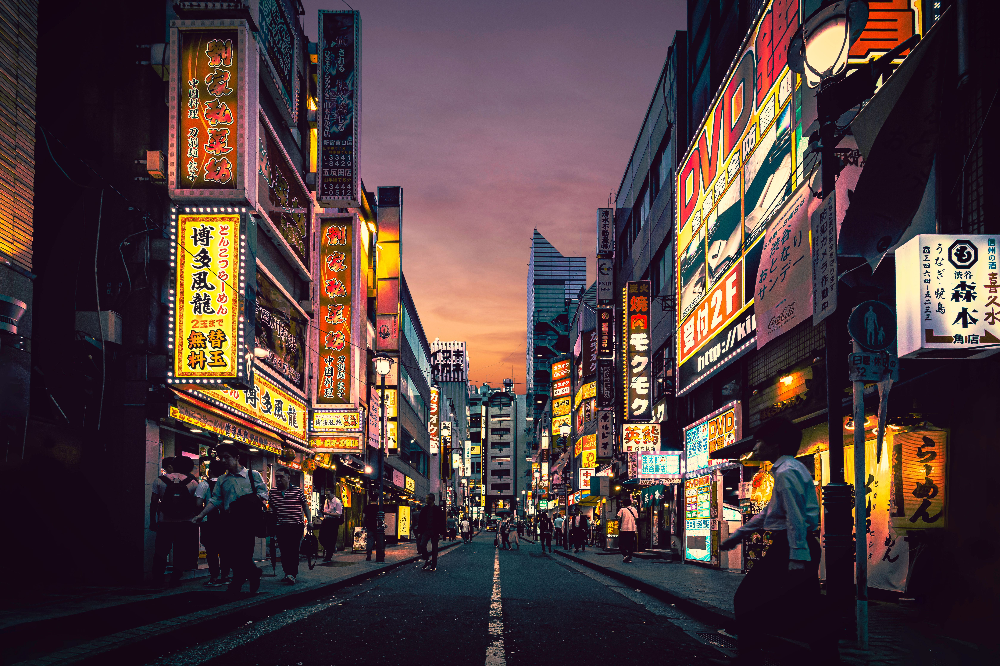
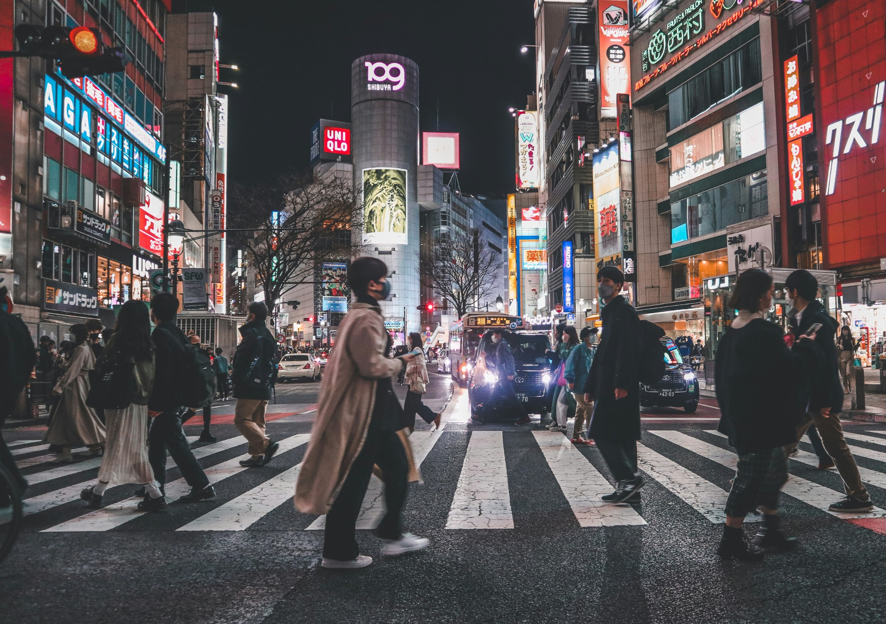

MY STORY

BETWEEN HOME AND POSSIBILITY
There are some places you carry with you even after you leave them. For me, Rajbiraj, Saptari, is one of those places.
Moving to Japan changed my surroundings, but it also changed the small things I notice about myself: how I spend a day, what I value, and what I hope to become.
THE LITTLE THINGS I CARRY
When I think of home, I don't first think of a landmark. I think of family conversations, familiar routines, and celebrations that felt ordinary until I was far away from them.
Those memories aren't something I left behind. They're part of how I make decisions, how I treat people, and why I want to make the most of the opportunities I have now.
THE ART OF STARTING OVER
A new country teaches through everyday moments, not only through big milestones.
There are unfamiliar words to understand, routes to figure out, and routines that take time to feel natural. Small tasks can be surprisingly meaningful when you're learning to manage them yourself.
Over time, what once felt unfamiliar becomes part of your day. I have learned to appreciate that progress, even when it is slow or invisible to anyone else.
LEARNING OUTSIDE MY COMFORT ZONE
Studying Digital Business & Innovation has encouraged me to ask not only how technology works, but also how people experience and trust it.
Researching transparency in AI advertising makes me think more carefully about the choices businesses make. Building webpages has taught me the other side of the process: turning an idea into something someone can use.
The combination pushes me to think, write, collaborate, and experiment instead of relying on a single strength.
WHAT DISTANCE TEACHES
Distance gives small moments a different weight. A familiar voice, an ordinary conversation, or a celebration back home can feel more important than ever.
There are days when I wish I could be present for those moments. Missing them has made me more aware of how much they mean to me.
At the same time, I know that the effort I put into this chapter is connected to the people and hopes that brought me here.
THE NEXT CHAPTER IS UNWRITTEN
I don't have every step mapped out and I think that's okay. I know I want to keep learning, creating, and becoming someone who can turn ideas into practical projects.
For now, that means trying new challenges, building with code, and paying attention to the lessons that don't come from a textbook.
One day I hope to look back at this chapter and recognize not only what I achieved, but also how much I grew while getting there.
MOMENTS BETWEEN TWO WORLDS
A visual journey through the landscapes, heritage, and city lights of Nepal and Japan.


Photography: Tobse Fritz (Unsplash), Volker Meyer (Pexels), and Breakify (Unsplash).